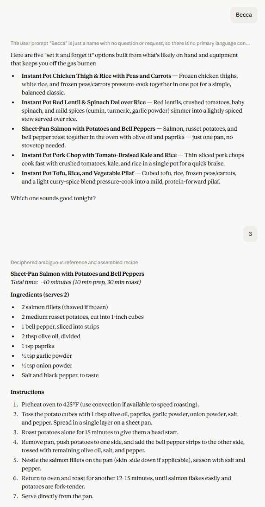

"Becca": for someone who doesn't like to cook
One word returns five straightforward options for my spouse to pick from. No interview, no analysis. Quick, low-effort dinners.

View the full conversation ↗My first prompt was a recipe request, and I built my first Claude project to streamline recipe building. I think of it as a magic cookbook. It interviews me about what I want to make based on whats's actually in my kitchen, and then offers some options. Here's some of the thinking behind it.
I love seeing the world through my stomach, exploring brand new recipes and what I can do with my cooking skills. It's a hobby that can quickly get expensive if I don't know how to reuse ingredients or competing responsibilities prevents me from cooking before expiration dates come. I always dreamed of having a magic cookbook that could work with my ideas based on what I had in my pantry.
A few websites attempt to do this, but quality of the results vary. You select the ingredients you want and they surface recipes that match. There isn't a way to search for substitutions, control the difficulty, or choose how long the recipe takes. I all but gave up on the magic cookbook until chatbots came around.
The first time I messaged ChatGPT was to see its abilities as a magic cookbook. It eventually got there, but the back and forth was significant. I didn't take the time to think through how to standardize recipe building until after I migrated to Claude and saw a LinkedIn post by a colleague I respect talking about the value of custom projects.
Projects are a way to create a space where you can tell Claude how to do a routine task the same way in every new conversation in that space. I had previously ignored it in my professional work because I didn't do anything repetitive. I saw my magic cookbook as a way to explore those skills in a low risk way.
The magic cookbook is a Claude project. A project is a space where you can set instructions for how Claude handles conversations that open inside it. You can also upload files that are accesssible to any conversation inside the project.
For this project, I wrote instructions for how I want recipes built and uploaded my ingredients and equipment as project knowledge. Then, I start a conversation with one of the following three triggers, and then Claude follows the corresponding instructions for what to do next:
Builds simple recipes for my spouse, a person who wants to spend as little time in the kitchen as possible.
Interviews me to fill any gaps I didn't mention in my description before building options.
Interviews me one question at a time about my vision, then builds options around my answers.
Here's what each trigger looks like in a real conversation. "Becca" stays deliberately simple. A description and "Go." both arrive at a rich, detailed recipe from different starting points. Tap any screenshot to view it full size:
The magic cookbook helps me find recipes for anything I can imagine, but it's impact goes much further. What started as a fun and low risk way to test an AI feature shined a very bright light on how inefficiently we were running our household. That's because projects don't exist in isolation. There's a physical world that depends on it:
Maintaining this system over time means building an inventorying habit, and from that habit spawned a host of other benefits:
Creating this project led to coordination of the week itself, and now Sunday family meetings have become a regular place to talk through whatever our family is facing.
These are nine excerpts from the actual instructions, shown exactly how Claude reads them. I used what I know from programming, writing formulas, and doing research to write logic that contains plain definitions. Every rule earned their place by fixing a problem I ran into over time.
This project is designed to help with selecting and designing recipes.
Orients Claude to the project's scope before any instructions, so every step is read in context. It goes first because Claude reads top-down. It's the same reason an effective email puts the ask in the first line.
I will start a conversation with one of three triggers: (1) the word “Becca” (see 1.1), (2) the word “Go.” (see 1.2), or (3) a description of what I want to cook (see 1.3).
Trigger words: a few key phrases each kick off a distinct experience, so one project serves three very different moods.
Absolute references: "see 1.1" points to the numbered structure unambiguously, so Claude always knows where it is.
When I start with “Becca,” I’m not the chef. Today’s chef has less skill, comfort, and interest in cooking and wants “set it and forget it”… offer five simple options and ask me to pick. Do not apply any subsequent rules outside of 4.2.c and 4.2.d when “Becca” is triggered.
An explicit "do not" endpoint stops Claude from running the advanced rules on a simple request. Without the boundary, my spouse's quick dinner question sometimes got the full interview treatment designed for me.
Ask the questions in 2. Interview one at a time, using earlier answers to shape later questions. After questioning, silently confirm everything is addressed, then summarize my expectations and wait for me to confirm before continuing.
Without this, Claude dumps every question in one overwhelming block. One at a time lets it build on each answer, so question four is already shaped by answers one through three. It feels like planning dinner with someone, not filling out a form.
If I triggered “Go.” or a description, silently analyze my responses, and do not print the analysis.
Without the word “silent,” Claude prints its reasoning as it goes, which is more than I need when I just want dinner. The thinking still happens; I just don’t have to scroll past it.
Compare the 3.1 profile to the 3.2 inventory and rule out impossible combinations. If a profile centers on lamb and I have none, drop it. If I named an ingredient in the interview, I already have it, so prioritize that… Use reasonable judgment for conflicts I couldn’t anticipate.
If/then checks: built on the numbered references, these let Claude test whether it should be doing something or not.
The reality check: Claude dreams up ideal dishes first; this step forces that dream to align with what’s actually in my kitchen. The “reasonable judgment” line covers the conflicts I couldn’t predict.
If I name a region, use its flavor profiles to emulate the style with what I have… Umami is umami: in a Thanksgiving dish I once used white miso instead of missing mushrooms and kept the same depth. Treat regional styles as flavor inspiration for pattern matching, not strict rules.
This whole section grew out of Claude repeatedly suggesting traditional ingredients I didn’t own. The miso-for-mushroom example grounds an otherwise vague instruction like “emulate that style,” and naming it “pattern matching” gives literal interpretations permission to be creative.
Assume home-chef literacy: standard technique names without explanation (“sauté the onion” needs no how-to), clear ingredient order, but added detail for advanced or specialized techniques like flambéing, sous vide, or culture-specific methods.
I name the audience: me. I know how to cook and have taken classes, so over-detailed recipes don’t serve me. Without this, Claude either writes for a nervous beginner or takes shortcuts on the techniques that actually need explaining.
Follow 4.2 distinctiveness. Don’t use any ingredient not captured in my interview or listed in 3.2.a unless I explicitly ask for it.
Earlier rules already say to use only what I have, but Claude still slips in new ideas sometimes (especially when I was testing on Opus 4.6 and 4.7) so I repeat the guardrail right where the final recipe gets written.
There isn't a single place to start using AI, or one right way to do it. This strategy works extremely well for me. Pick something you're interested in, observe what happens, and improve it over time. Find the communication style that works best for you.
The annotated instructions highlights decisions behind the structure of each rule, beyond what's included in this excerpt. The raw version is the clean instruction set I actually use with Claude.
Chatbots are constantly evolving, so I treat these instructions and all of my prompts as living documents. While building this website, I tested the recipe project and found Sonnet 5 summarized what it was "silently confirming" before sharing recipe options. I added these instructions to 5. Recipe Output: "Do not output your silent analysis or reference it as "silently confirmed." That defeats the purpose of it being silent."